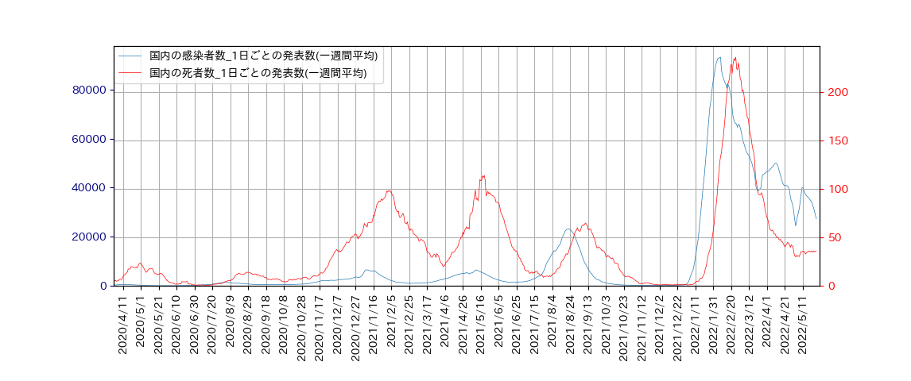
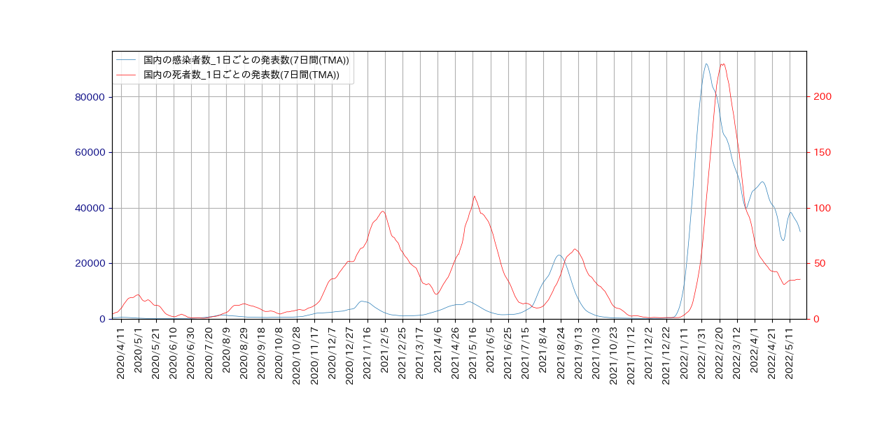
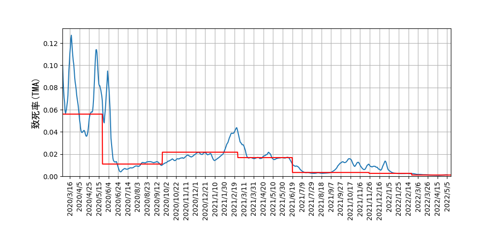

Covid-19 致死率の時間推移
NHKの最新データによる1日ごとの感染者数と死者数の7日間の移動平均グラフを表示します。

もう一度7日間の移動平均を行います。移動平均を2回繰り返したものを三角移動平均(Triangular Moving Average - TMA)
と言います。

この図をもとに、各感染の波の継続期間を推定し、致死率を計算します。
| 感染波 | 種類 | 期間 | 人数 | 致死率 |
| 第1波 |
新規感染者 | 2020/1/16 から 2020/5/22 | 16,529 |
0.0560 |
| 死亡者 | 2020/2/13 から 2020/6/12 | 925 |
| 第2波 |
新規感染者 | 2020/5/23 から 2020/9/23 | 63,624 |
0.0110 |
| 死亡者 | 2020/6/13 から 2020/10/9 | 700 |
| 第3波 |
新規感染者 | 2020/9/24 から 2021/2/26 | 350,427 |
0.0217 |
| 死亡者 | 2020/10/10 から 2021/4/3 | 7,611 |
| 第4波 |
新規感染者 | 2021/2/27 から 2021/6/19 | 353,270 |
0.0168 |
死亡者 | 2021/4/4 から 2021/7/28 | 5,926 |
| 第5波 |
新規感染者 | 2021/6/20 から 2021/11/25 | 942,472 |
0.0034 |
死亡者 | 2021/7/29 から 2021/12/15 | 3,214 |
| 第6波I期 |
新規感染者 | 2021/11/26 から 2022/2/21 | 2,822,037 |
0.0026 |
| 死亡者 | 2021/12/16 から 2022/3/10 | 7,346 |
| 第6波Ⅱ期 |
新規感染者 | 2022/2/22 から 2022/5/26 | 4,197,133 |
0.0011 |
死亡者 | 2022/3/11 から 2022/5/26 | 30,467 |
ここで、各々の日の致死率を、
\[
\rm t 日の致死率 = \frac{(t+d)日の死亡者数}{t日の新規感染者数}
\]
と近似し\( d= 17 \)とおいて計算したものと、上で求めた期間毎の平均致死率を重ねて表示すると、次のようになります。
